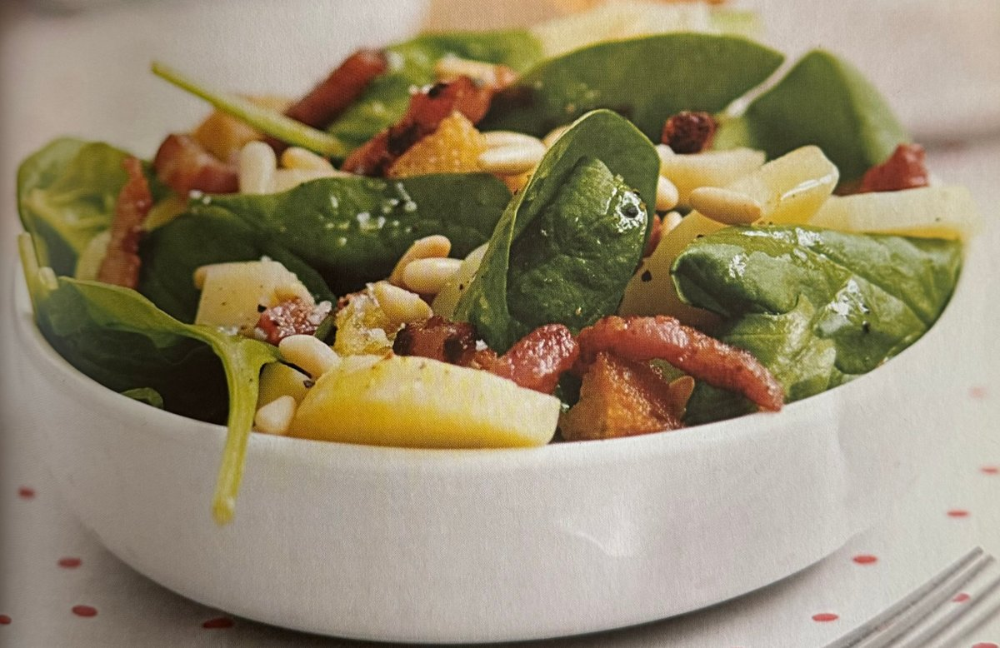

Taboulé
Ingredients
×
- 200 g de semoule
- 1 concombre
- 1 oignon
- 1 poivron vert
- 3 tomates
- menthe
- feta
- 5 c. à s. d'huile d'olive
- 1 citron
- sel
- poivre

Préparation
Étape 1
Mettre 200 g de semoule dans un saladier (la cuire avant si besoin).
Étape 2
Râper 1 concombre. Mixer 1 oignon et 1 poivron vert sans les réduire en jus. Peler et couper en petits dés 3 tomates.
Étape 3
Mélanger le tout avec de la menthe et de la feta, 5 c. à s. d'huile d'olive, le jus d’1 citron, sel et poivre.
Étape 4
Laisser reposer 1 nuit au réfrigérateur.